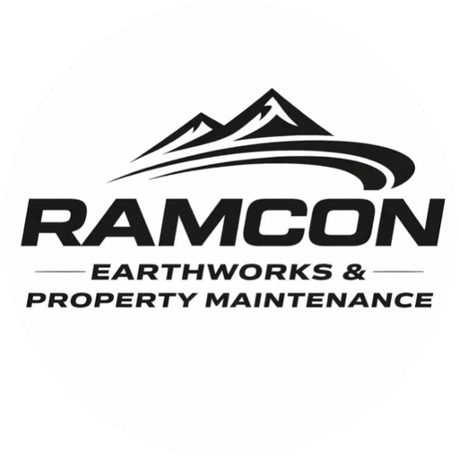
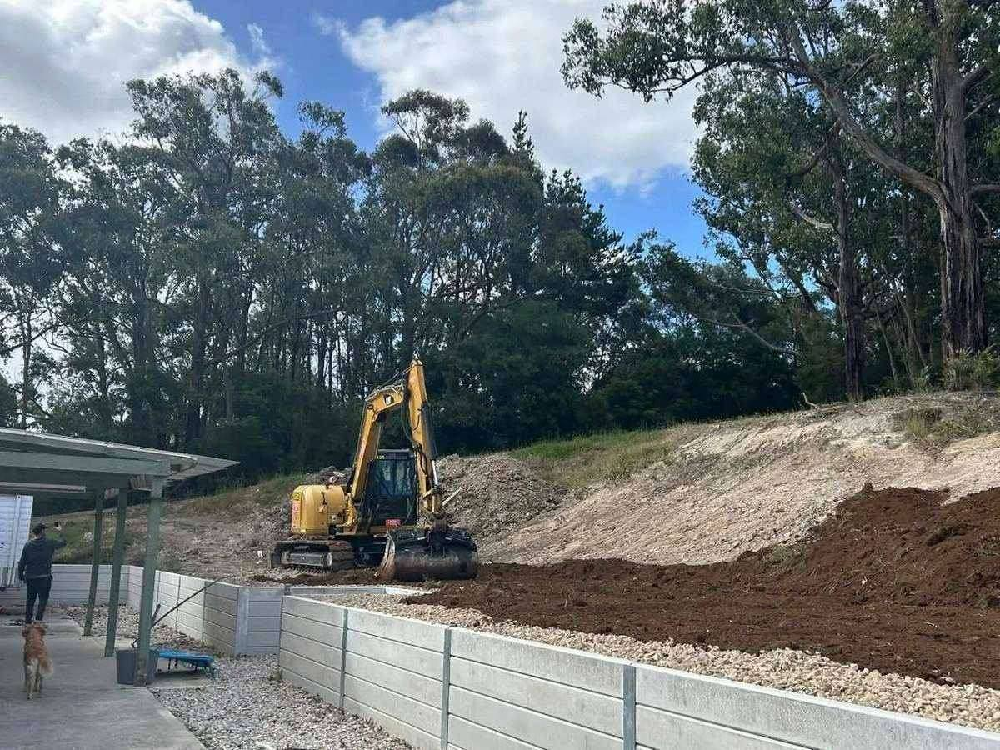

Bulk excavation
House pads, shed pads, dams, site stripping and level cuts.

Earth Whispera Kilkivan QLDEarthworks & siteworks — Kilkivan, QLD
30 years moving earth across Wide Bay — bulk excavation, footings, graded trenches, drainage, driveways, retaining walls. Owner operated by Aaron Wakelin, on the tools and accountable for the finish.
Owner operatedAaron, on the tools
Plant1.7t–22t excavators
Wide BayLocal & insured

What we do
House pads, shed pads, dams, site stripping and level cuts.
Strip footings, pier holes, slab thickenings — trenched straight and square.
Services, drainage, stormwater — laser-graded fall every time.
Sub-base, compaction, formwork-ready pads for drives and sheds.
Table drains, spoon drains, culverts, erosion control structures.
Silt fencing, rock check dams, batter stabilisation, hydro-mulch prep.
Rural driveways, access tracks, farm roads — crowned and drained.
Commercial and rural hardstands — graded, compacted, sealed-ready.
Cut batter support, sleeper walls, rock walls — engineered backfill.
Finish grading, topsoil spread, turf prep, rock placement.
About Earth Whispera
Aaron Wakelin has been running excavators and dozers across the Wide Bay and Burnett since the early 1990s. From house pads on sloping blocks to kilometre-long farm roads, the standard is the same: cut clean, grade true, compact hard.
No subcontractors on the iron — Aaron operates every machine on site. That means the operator who sets out the job is the one who finishes it. One point of accountability. No blame-shifting.
Plant includes excavators (1.7t–22t), articulated dump trucks, padfoot and smooth-drum rollers, laser-guided dozer, and tipper trucks for spoil cartage.
Get a quote
No call centres. No middlemen. You call, Aaron answers — or he calls you back from the cab.
Or use the form below — it lands straight in Aaron's inbox.